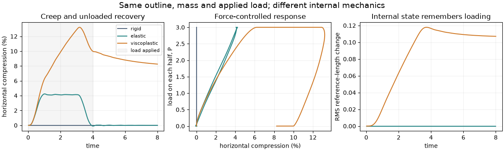
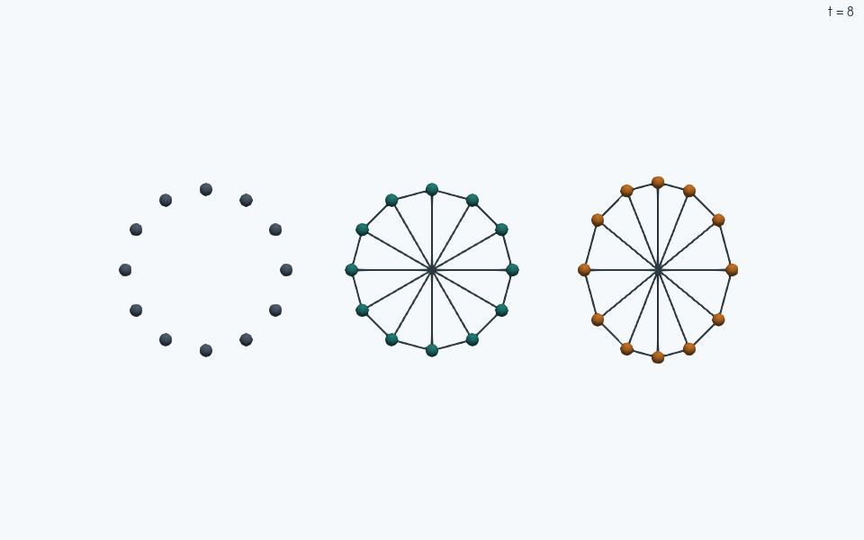

Note
Go to the end to download the full example code.
Rigid, elastic and viscoplastic grains under the same load#
How much of a grain’s deformation disappears when its load is removed? Apply the same pair of opposing, distributed forces to three initially identical twelve-node outlines: a rigid clump, an elastic deformable particle, and a viscoplastic deformable particle. Plot their compression, load–deformation curves and evolving reference lengths.
This is a force-controlled experiment. Prescribing the same nonzero shape strain would be incompatible with a perfectly rigid grain. Here the rigid grain carries a nonzero, self-balanced load without changing shape; the deformable grains respond through their internal bonded forces. No wall contact or overlap law is needed for this single-grain comparison. The nodes, initial outline, total mass and applied forces are matched.
The small planar framework is a constitutive demonstration, not a calibrated continuum material or a test of fracture. It uses reduced units and runs for eight time units, including a four-unit unloaded recovery.
This example additionally requires Matplotlib for plotting:
python -m pip install matplotlib.
Elastic energy and reference-state flow#
The elastic and viscoplastic grains use exactly the same edge, enclosed-area and bending coefficients. With current edge lengths \(L_e\), enclosed area \(A\), and signed bending angles \(\theta_a\), the energy is
JaxDEM obtains the nodal forces from \(-\partial E/\partial\mathbf x_i\).
The constructor computes \(w_b\) from the reference polygon. The
PlasticDeformableParticleModel changes only the reference edge lengths:
The discrete update is exact while the current geometry is held fixed and occurs once per physical step. Area and bending references remain fixed. Finite \(\tau_s\) permits reference flow for any edge extension: this model has no yield threshold. Setting \(\tau_s=\infty\) recovers the elastic reference history. A finite-time residual shape demonstrates memory; its value also depends on the subsequent recovery time.
import jax
import jax.numpy as jnp
from functools import partial
import os
import matplotlib.pyplot as plt
import numpy as np
import jaxdem as jdem
jax.config.update("jax_enable_x64", True)
N = 12
DT = 0.002
FRAME_DT = 0.02
N_FRAMES = 400
PEAK_LOAD = 3.0
DRAG = 2.0
TAU_S = 0.8
angles = jnp.arange(N) * (2.0 * jnp.pi / N)
vertices = jnp.stack((jnp.cos(angles), jnp.sin(angles)), axis=-1)
indices = jnp.arange(N)
elements = jnp.stack((indices, jnp.roll(indices, -1)), axis=-1)
# Perimeter edges plus diametral struts resist flattening and give the
# reference-length relaxation a clear internal deformation to remember.
struts = jnp.stack((jnp.arange(N // 2), jnp.arange(N // 2) + N // 2), axis=-1)
edges = jnp.concatenate((elements, struts))
adjacency = jnp.stack((indices, jnp.roll(indices, -1)), axis=-1)
reference_lengths = jnp.linalg.norm(
vertices[edges[:, 1]] - vertices[edges[:, 0]], axis=-1
)
The same loading protocol#
The total inward horizontal force on each half of the outline is \(P(t)\). Distribute it in proportion to the initial horizontal normal:
Reflection symmetry of the complete outline and loading pattern balances both resultant force and torque. These are dead loads attached to corresponding nodes, rather than pressure that follows the changing surface normal. A smooth ramp loads the grain over one time unit, a two-unit hold allows creep, and another smooth ramp unloads it. Linear drag removes oscillations in the deformable runs. It also produces finite-rate hysteresis in the elastic run, so loop area alone does not isolate reference-state dissipation. More precisely, the plotted load–width compression curve is a response curve: width compression is not generally work-conjugate to this distributed load under nonaffine deformation, and its loop area is not directly dissipated work. The work supplied by the prescribed nodal loads is
Here \(\mathbf p_i\) is the dimensionless loading pattern defined above. This expression excludes the drag contribution; an energy balance would account separately for drag dissipation, kinetic and elastic energy changes, and relaxation of the reference state.
load_pattern = jnp.stack(
(
-jnp.cos(angles) / jnp.sum(jnp.maximum(jnp.cos(angles), 0.0)),
jnp.zeros(N),
),
axis=-1,
)
def applied_load(time):
ramp_up = 0.5 * (1.0 - jnp.cos(jnp.pi * jnp.clip(time, 0.0, 1.0)))
ramp_down = 0.5 * (1.0 + jnp.cos(jnp.pi * jnp.clip(time - 3.0, 0.0, 1.0)))
return PEAK_LOAD * ramp_up * ramp_down
def loading_and_drag(pos, state, system):
del pos
force = applied_load(system.time) * load_pattern - DRAG * state.vel / N
return force, jnp.zeros_like(state.torque)
def make_experiment(kind, dt=DT):
if kind == "rigid":
# Rigid members share a COM, total mass and planar moment of inertia.
# Unit-radius point nodes of total mass one have I_zz = 1.
state = jdem.State.create(
pos=jnp.zeros_like(vertices),
pos_p=vertices,
clump_id=jnp.zeros(N, dtype=int),
mass=jnp.ones(N),
inertia=jnp.ones((N, 1)),
rad=jnp.full(N, 0.08),
)
model = None
else:
state = jdem.State.create(
pos=vertices,
mass=jnp.full(N, 1.0 / N),
rad=jnp.full(N, 0.08),
bond_id=jnp.zeros(N, dtype=int),
)
model = jdem.BondedForceModel.create(
(
"deformable_particle_model"
if kind == "elastic"
else "PlasticDeformableParticleModel"
),
vertices=vertices,
elements=elements,
edges=edges,
element_adjacency=adjacency,
el=10.0,
ec=10.0,
eb=0.1,
**({"tau_s": TAU_S} if kind == "viscoplastic" else {}),
)
system = jdem.System.create(
state=state,
dt=dt,
bonded_force_model=model,
collider_type="", # This experiment applies loads directly to nodes.
rotation_integrator_type="", # The symmetric loading has zero torque.
force_manager_kw={"force_functions": (loading_and_drag,)},
)
return jdem.System.initialize(state, system)
Integrate once, sample compact diagnostics#
Translational velocity Verlet advances the actual rigid-body or nodal equations. The compiled scan stores only 400 frames from 4,000 steps. Compression is \(\epsilon_x=1-W(t)/W(0)\), where \(W\) is the horizontal span of the node centers, initially two. The reference diagnostic \(\sqrt{\langle(L_{e,0}(t)-L_{e,0}(0))^2\rangle_e}\) distinguishes reference flow from a temporarily deformed elastic shape.
@partial(jax.jit, static_argnames=("substeps", "capture_scene"))
def run_experiment(state, system, *, substeps, capture_scene=False):
def frame(carry, _):
state, system = jdem.System.step(*carry, n=substeps)
width = jnp.max(state.pos[:, 0]) - jnp.min(state.pos[:, 0])
reference_change = jnp.asarray(0.0)
if system.bonded_force_model is not None:
reference_change = jnp.sqrt(
jnp.mean(
(system.bonded_force_model.initial_edge_lengths - reference_lengths)
** 2
)
)
diagnostics = (
state.pos,
system.time,
1.0 - width / 2.0,
reference_change,
jnp.max(jnp.abs(state.vel)),
)
output = (diagnostics, state, system) if capture_scene else diagnostics
return (state, system), output
return jax.lax.scan(frame, (state, system), None, length=N_FRAMES)
kinds = ("rigid", "elastic", "viscoplastic")
histories = {}
scene_states, scene_systems = {}, {}
capture_scene = os.environ.get("JAXDEM_DOCS_VISUALS") == "1"
for kind in kinds:
state, system = make_experiment(kind)
_, history = run_experiment(
state, system, substeps=round(FRAME_DT / DT), capture_scene=capture_scene
)
if capture_scene:
history, scene_states[kind], scene_systems[kind] = history
histories[kind] = jax.device_get(history)
Checks and timestep refinement#
A rigid outline must not change under balanced loading; the elastic reference lengths must not evolve. After release the elastic grain nearly recovers, while the viscoplastic grain retains a visible shape and reference change. Halving dt repeats the same physical protocol and checks its final compression. Thus the result is more than a plausible-looking trajectory.
np.testing.assert_allclose(jnp.sum(load_pattern, axis=0), 0.0, atol=1e-12)
np.testing.assert_allclose(
jnp.sum(vertices[:, 0] * load_pattern[:, 1] - vertices[:, 1] * load_pattern[:, 0]),
0.0,
atol=1e-12,
)
np.testing.assert_allclose(histories["rigid"][2], 0.0, atol=1e-12)
np.testing.assert_allclose(histories["elastic"][3], 0.0, atol=1e-12)
for kind, (positions, times, strain, reference_change, speed) in histories.items():
assert np.all(np.isfinite(positions)), f"Nonfinite {kind} trajectory"
np.testing.assert_allclose(positions.mean(axis=1), 0.0, atol=1e-10)
assert speed[-1] < 0.01, f"{kind} has not relaxed after unloading"
assert abs(histories["elastic"][2][-1]) < 5e-4
assert histories["viscoplastic"][2][-1] > 0.02
assert histories["viscoplastic"][3][-1] > 0.02
state, system = make_experiment("viscoplastic", dt=DT / 2)
_, refined = run_experiment(state, system, substeps=round(FRAME_DT / (DT / 2)))
refined_strain = float(refined[2][-1])
np.testing.assert_allclose(
refined_strain, histories["viscoplastic"][2][-1], rtol=0.0, atol=2e-4
)
print("Model peak compression final compression reference change")
for kind in kinds:
_, _, strain, reference_change, _ = histories[kind]
print(
f"{kind:13s} {strain.max():16.5f} {strain[-1]:17.5f}"
f" {reference_change[-1]:16.5f}"
)
print(f"Final viscoplastic compression at dt/2: {refined_strain:.5f}")
Model peak compression final compression reference change
rigid 0.00000 0.00000 0.00000
elastic 0.04233 -0.00001 0.00000
viscoplastic 0.13215 0.08254 0.10706
Final viscoplastic compression at dt/2: 0.08251
Shape, creep and recovery#
The ParaView poster compares the three outlines after unloaded recovery (\(t=8\)). The short animation follows the computed trajectories through loading, the hold ending at \(t=3\), and recovery. The rigid load–compression curve is vertical because its compliance is zero. The viscoplastic reference continues to relax during recovery; the reported residual is at the stated observation time. Increase the recovery time, change \(\tau_s\), or vary the loading rate to distinguish delayed response from an ideal rate-independent plastic law.
colors = {"rigid": "#52657c", "elastic": "#258685", "viscoplastic": "#d07a28"}
fig, axes = plt.subplots(1, 3, figsize=(12, 3.6), layout="constrained")
for kind in kinds:
_, times, strain, reference_change, _ = histories[kind]
axes[0].plot(times, 100 * strain, color=colors[kind], label=kind)
axes[1].plot(100 * strain, applied_load(times), color=colors[kind], label=kind)
axes[2].plot(times, reference_change, color=colors[kind], label=kind)
axes[0].axvspan(0, 4, color="0.5", alpha=0.08, label="load applied")
axes[0].set(
xlabel="time",
ylabel="horizontal compression (%)",
title="Creep and unloaded recovery",
)
axes[0].legend(fontsize=8)
axes[1].set(
xlabel="horizontal compression (%)",
ylabel="load on each half, P",
title="Force-controlled response",
)
axes[2].set(
xlabel="time",
ylabel="RMS reference-length change",
title="Internal state remembers loading",
)
for ax in axes:
ax.grid(alpha=0.2)
fig.suptitle(
"Same outline, mass and applied load; different internal mechanics", fontsize=14
)
plt.show()


Rigid grains use slate blue, elastic grains teal, and viscoplastic grains orange, matching the diagnostic plots. Display offsets separate the three experiments; each mesh and node field comes from that model’s matching State/System snapshot.
Left to right: rigid; elastic; viscoplastic.
Explore this scene in 3D
Total running time of the script: (0 minutes 43.558 seconds)